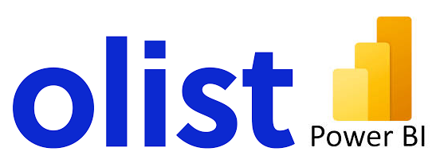

Data Analysis and Visualisation of Olist
Olist is a Brazillian E-commerce and one of the largest department store in Brazilian marketplaces, connecting small businesses from all over Brazil to channels without hassle and with a single contract website. Explanatory data analysis was performed on the Olist dataset to generate business insights and provide recommendations for improvement. The results of the analysis was visualised on Microsoft Power BI dashboards with clear, concise, and informative data visualisations that drive recommended improvements.
